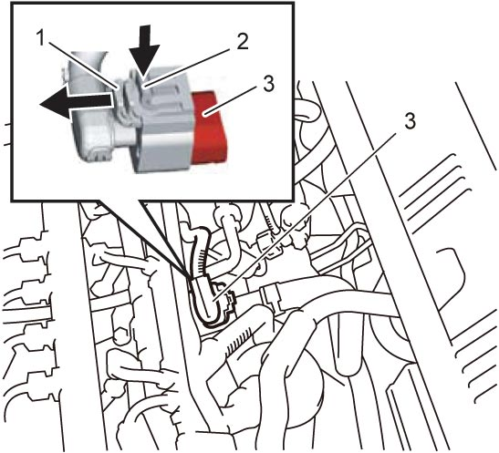
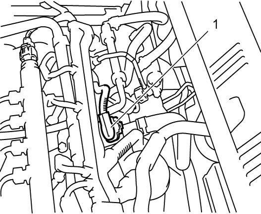

1C
| Boost Pressure Sensor with IAT Sensor-2 Removal and Installation |
Removal
1)Disconnect negative (–) cable at battery.
2)Remove engine cover. 
3)Disconnect connector from boost pressure sensor with IAT sensor-2 as follows.
a)Move connector lock pin (1) in arrow direction as shown in figure.
b)Push connector lock lever (2) and disconnect connector from boost pressure sensor with IAT sensor-2.
4)Remove boost pressure sensor with IAT sensor-2 (3) from intake manifold.


 "Expand image")
Installation
Reverse removal procedure noting the following points.
•Check O-ring of boost pressure sensor with IAT sensor-2 (1) for deformation or damage.
If defect is found, replace boost pressure sensor with IAT sensor-2.
•Connect connector to boost pressure sensor with IAT sensor-2 securely.
If defect is found, replace boost pressure sensor with IAT sensor-2.
•Connect connector to boost pressure sensor with IAT sensor-2 securely.

 "Expand image")